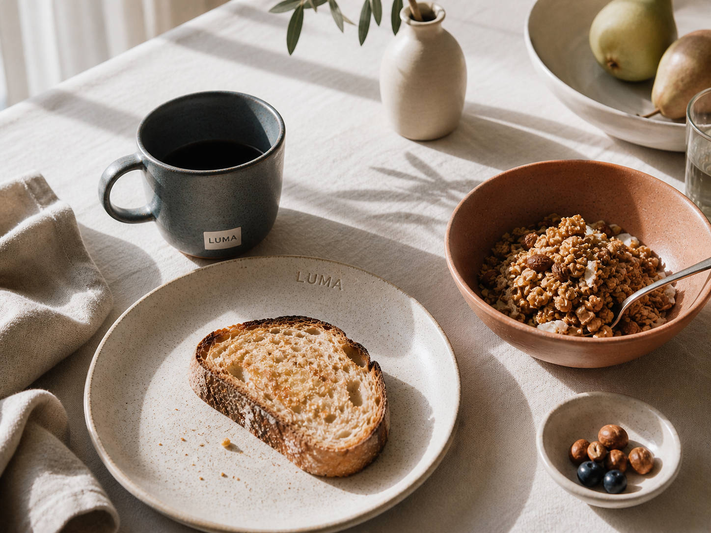
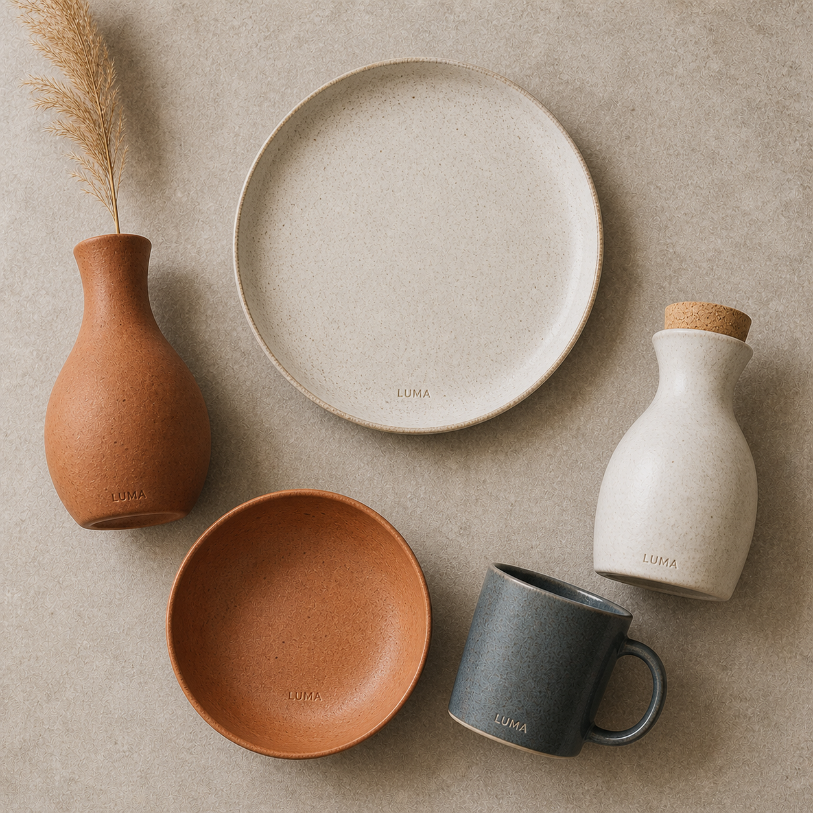
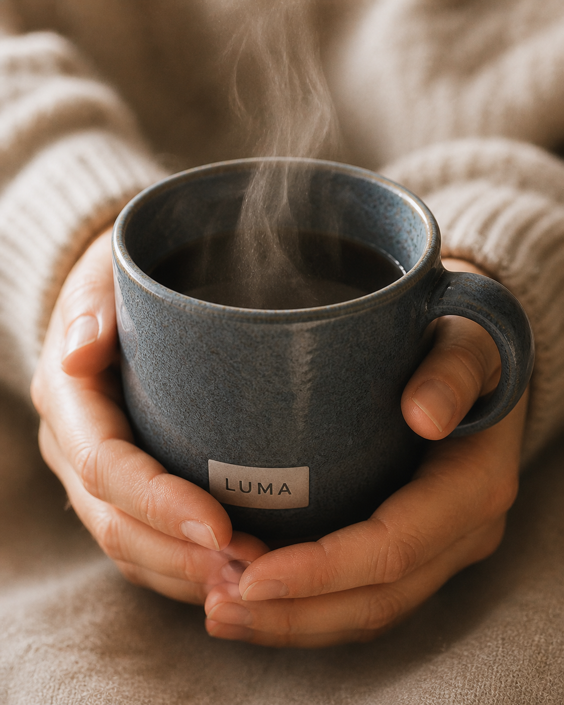

Form follows feeling
Contemporary ceramic tableware — made to be held
LUMA is a contemporary ceramics studio producing functional tableware for daily ritual. Every piece is wheel-thrown in small batches — plates, bowls, mugs, carafes — designed to develop a patina with use. The brand lives at the intersection of Scandinavian restraint and Mediterranean warmth.
The brief: build an identity that feels calm without being cold. The ceramics themselves are the product, so the brand system had to step back and let texture, weight, and imperfection lead.
LUMA uses DM Serif Display in its regular weight — open, rounded letterforms that echo the curves of thrown pottery. No bold, no italic affectation: the letters stand quietly, like objects on a shelf. The optional italic variant, set in terracotta, is used for campaign headlines and seasonal sub-brands.
The palette is taken directly from the ceramics themselves: the pale linen of unglazed stoneware, the warm terracotta of iron-rich clay, the blue-grey of reduction-fired slate glaze. Digital materials and packaging stay in the warm neutrals; the terracotta and slate serve as accent and product colour.
DM Serif Display carries the brand's warmth — used for wordmark, campaign headlines, and product names. Syne handles all functional text: menus, labels, price points, tags. The pairing creates a quiet hierarchy: serif announces, sans organises.
The core range comprises five archetypal vessels — plate, bowl, mug, carafe, vase. Each is produced in two glaze families: Linen (natural stoneware) and Terracotta (iron-rich clay), with a limited Slate series each season. The system is deliberately simple so pieces can be freely mixed.
The launch campaign, "A Good Morning," was shot in natural light only — no studio flash. Every image shows a piece in mid-use: a bowl with remaining granola, a mug held with both hands, a carafe with sunlight passing through the water. The message: these objects earn their place by being used.



"Objects don't have to be precious. They just have to be good."
— LUMA, A Good MorningThe LUMA identity launched across e-commerce, wholesale, and three independent concept stores in Amsterdam, Copenhagen, and Milan. The restrained visual system translated effortlessly across digital and print touchpoints, building strong organic recognition within the first quarter.